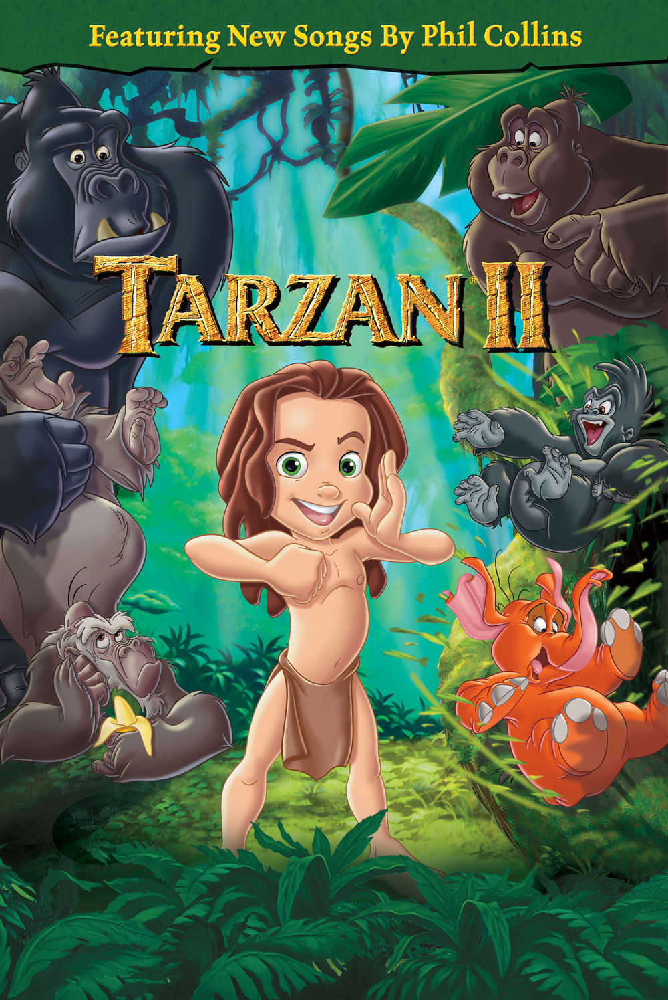

Tarzan II / 2005 / Rating: 5/5
Set back when Tarzan was just a boy, this is the story of Tarzan's journey to self-discovery. When Tarzan begins to see that he is not like the other gorillas, his mother Kala assures him that these slight differences only make him stronger. But when these differences put Kala in danger, he decides everyone would be better off without him and runs away. He then finds himself in a dark desolate land called Dark Mountain where he meets a new friend who helps him discover that even though he does not possess the talents of an ape, he has his own unique set of jungle skills that make him even more amazing than any other creature so that he can finally see who he truly is.